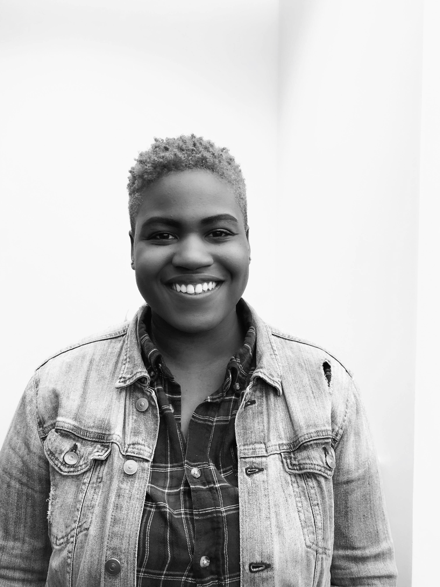

I am an HR Assistant and educator who enjoys data and operations. I am currently enrolled in UConn's
Coding Bootcamp to gain fullstack skills that will heighten my
ability to manuever around technology and systems. I'm from Bridgeport, Connecticut where I was
reared by my mother, Sylvia, and step-father, Michael.
My mom gave birth to two sets of twins, roughly 18-months apart, so as you might imagine I grew up
in a
house full of personality and a little chaos. My siblings and I grew up really close and honestly,
they're my inspiration to follow my dreams.
In 2010, I graduated as Valedictorian of my high school class and in 2014, I graduated with a
bachelor's
in Business Administration from UConn. Since graduating I have been on the search to find a career
that suits me and my passions.